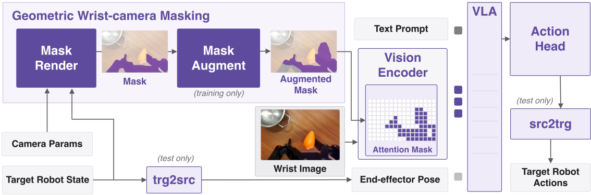
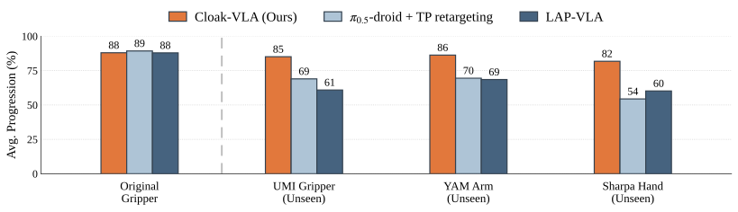

TL;DR: Mask the gripper out of the vision encoder's attention, and a VLA trained on one gripper controls unseen embodiments zero-shot.
English subtitles available · 提供中文字幕
We present Cloak, a training recipe that endows a Vision-Language-Action (VLA) model with zero-shot cross-embodiment transfer by cloaking the end-effector from its own wrist camera. The end-effector occupies a large and consistent region of the wrist view and masking it allows for embodiment-agnostic visual reasoning. Cloak renders a mask in simulation from the robot's known geometry, accurately and in real time, with no segmentation or generative models. During training, we augment the mask so the model generalizes to embodiments unseen at training time. We demonstrate the recipe with Cloak-VLA, a VLA trained with Cloak on a single parallel-jaw gripper dataset. No data of new embodiments is ever collected. Cloak-VLA transfers zero-shot to various unseen embodiments, including another gripper, another arm, and a five-fingered hand, while preserving the source embodiment's performance. By decoupling the wrist view from its own embodiment, Cloak allows data to outlive the hardware it was collected on.

Large-scale robot datasets of gripper demonstrations exist for Vision-Language-Action (VLA) model training, but hardware is evolving rapidly, especially as the frontier expands to include dexterous robotic hands. This raises the question of how we can repurpose data collected on one source embodiment to control an unseen target embodiment. Our goal is to deploy a VLA policy trained on one embodiment to another unseen embodiment zero-shot, without any new data collection and without any finetuning or retraining.
There are two main challenges in deploying a VLA policy zero-shot to an unseen embodiment. First, a kinematic gap arises from the different geometries and kinematics of the source and target embodiments. Second, a visual gap arises from the different appearances of the source and target end-effectors in their own wrist cameras. The former can be overcome with inverse kinematics, but the latter is less straightforward to handle.
Kinematic gap. The VLA is trained unaware of any future target embodiment, so the input state and output actions stay in the source embodiment's joint space. Therefore, during deployment we must convert between the source and target embodiments. To convert from embodiment A to B, we use FK to compute the 6D pose of two tip frames on embodiment A (e.g. gripper jaws) followed by IK to find embodiment B's corresponding joint configuration that achieves the same two tip poses (e.g. for two fingertips). This FK-IK operation happens in two places: src2trg converts VLA output actions to the target embodiment. trg2src converts the target embodiment's proprioceptive state input to the source embodiment's joint space.
Visual gap. To handle the visual gap, we mask the end-effector from its own wrist view using a geometric mask render in simulation rather than generative inpainting. We augment the mask (mask augment) during training so the policy does not overfit to one end-effector silhouette. We then use the augmented mask to compute an attention mask for the vision encoder, cloaking the source embodiment inside the VLA. At deployment on an unseen target embodiment, we cloak the target end-effector in the same way, without augmentations.

On the source Robotiq gripper, where no embodiment gap exists, all three methods perform comparably (≈88% task progression). The differences emerge on the unseen embodiments: Cloak-VLA retains most of its source performance on the UMI gripper (85%), the YAM arm (86%), and the Sharpa hand (82%), while both baselines fall off sharply. The gap is largest on the dexterous Sharpa hand, where π0.5-droid drops to 54% and LAP-VLA to 60%. Without masking, π0.5-droid and LAP-VLA see an out-of-distribution end-effector in the wrist image and struggle to grasp objects accurately, the primary failure mode behind their lower scores on the unseen embodiments.
"Move the white mug near the bowl"
Cloak-VLA (ours)
π0.5-droid
LAP-VLA
"Put the cube in the yellow bowl"
Cloak-VLA (ours)
π0.5-droid + TP retargeting
LAP-VLA
"Remove the marker from the bowl"
Cloak-VLA (ours)
π0.5-droid + TP retargeting
LAP-VLA
"Fold the towel"
Cloak-VLA (ours)
π0.5-droid + TP retargeting
LAP-VLA
@misc{piseno2026cloak,
title = {Cloak: Zero-Shot Cross-Embodiment Manipulation by Masking the End-Effector from the VLA},
author = {Piseno, Michael and Tevet, Guy and Liu, C. Karen},
year = {2026},
eprint = {2606.22836},
archivePrefix = {arXiv},
primaryClass = {cs.RO}
}